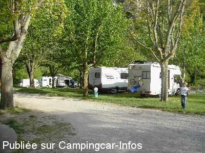
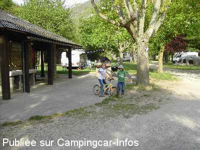

ACS = Aire de services sur camping acceptant le passage pour les services de :
LA MALÈNE
(N° 172)
Accès/adresse :
D907bis
Camping municipal du Pradet **
48210 LA MALÈNE
Camping municipal du Pradet **
48210 LA MALÈNE
Latitude : (Nord) 44.30122° Décimaux ou 44° 18′ 4′′
Longitude : (Est) 3.3184° Décimaux ou 3° 19′ 6′′
Tarif : 2015
Stop accueil, sauf juillet / août : 9,20 €
Emplacement, 2 personnes : 13,10 €
Personne + 7 ans : 4,60 €
Enfant - 7 ans : 2,70 €
Électricité 5 A : 3,10 €
Chien : 1,20 €
Taxe de séjour + 13 ans : 0,20 €
Services C-C de passage : 2,70 €
Type de borne : Plateforme
Services :


Lave-linge
Sèche-linge
Autres informations :
Ouverture du 01/04 au 15/10
45 emplacements
Tél : +33(0)466 485 116
la.malene.mairie@wanadoo.fr
http://www.gorgesdutarn-camping.com/index.htm

Le 07/05/2006 par Tricmuche

Le 07/05/2006 par Tricmuche
de
padiolleau luc
le 20/08/2009 :
Bonjour. Pour 2 personnes forfait tout compris 12€ sanitaire nickel et accueil sympa, le tout au bord de l'eau.
Bonjour. Pour 2 personnes forfait tout compris 12€ sanitaire nickel et accueil sympa, le tout au bord de l'eau.
de
Michel CARNET
le 09/06/2009 :
Sommes passés dans ce charmant camping municipal situé en plein cœur des gorges du Tarn. Accueil formidable, super village et possibilité de faire des randonnées en canoë kayak à deux pas du camping. De plus, possibilité de se connecter sur Internet avec WIFI en faisant la demande à l'accueil. Bref, je le recommande à tous surtout que les tarifs sont raisonnables.
Sommes passés dans ce charmant camping municipal situé en plein cœur des gorges du Tarn. Accueil formidable, super village et possibilité de faire des randonnées en canoë kayak à deux pas du camping. De plus, possibilité de se connecter sur Internet avec WIFI en faisant la demande à l'accueil. Bref, je le recommande à tous surtout que les tarifs sont raisonnables.
de
Pascal
le 27/08/2008 :
Bonjour. Je me suis rendu sur ce site il y a 2 semaines. Les tarifs : 2€ la vidange eaux usées et WC, pour le remplissage d'eau, je ne sais pas.
La nuit camping (pas d'autre choix) 11€ + 2.50€ l'électricité en pleine saison.
Bonjour. Je me suis rendu sur ce site il y a 2 semaines. Les tarifs : 2€ la vidange eaux usées et WC, pour le remplissage d'eau, je ne sais pas.
La nuit camping (pas d'autre choix) 11€ + 2.50€ l'électricité en pleine saison.
de
Suzy et Jean-Paul Schneiter
le 26/07/2006 :
De passage sur cette aire deux jours. Camping très calme, sanitaires propres, borne artisanale et pratique. 17,50€ la nuit avec l'électricité ou 2 € les services. Possibilité de descendre les Gorges du Tarn en barque avec les Bateliers de la Malène ou en canoë et kayak sur plusieurs km à la portée de tous.
De passage sur cette aire deux jours. Camping très calme, sanitaires propres, borne artisanale et pratique. 17,50€ la nuit avec l'électricité ou 2 € les services. Possibilité de descendre les Gorges du Tarn en barque avec les Bateliers de la Malène ou en canoë et kayak sur plusieurs km à la portée de tous.